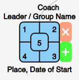

GenMapper 0.1.0 Help
Hello, this app should serve for mapping generations of simple churches. I pray it serves you to advance Jesus' kingdom.
Legend
There are 5 squares in the diagram. they stand for:
1 - # of unbelievers
2 - # of believers
3 - # of people in accountability group
4 - is the group a church?
5 - # of people helping start other groups
Click on the group to edit it.
Click on red button to remove group. (Works only for groups without descendants.)
Click on green button to add child group.
Import / Export
Note: If you don't export, all changes will be lost when refreshing or closing page.
You can import a .xlsx or .xls (MS Excel) or .csv (Comma separated values) files. Please use this XLSX example spreadsheet.
Export is currently available only to .csv format.
For Export to PDF, use the Print buttons and then save as PDF in Chrome or Safari.
Panning / Zooming
You can pan by draging the map and zoom by mouse wheel or using buttons on the left.
Credits
Thanks to Curtis Sergeant for the idea of generational mapping and for providing useful feedback.
JavaScript libraries used: d3.js, FileSaver.js, js-xlsx and Underscore.js
Copyright (c) 2016 Daniel Vopalecky
Licensed with MIT Licence
Github repository
Please send suggestions and bugs to daniel.vopalecky@seznam.cz